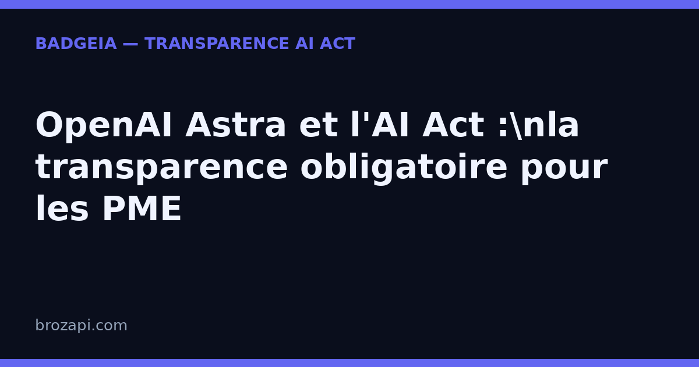

OpenAI Astra et l’AI Act : la transparence devient obligatoire pour les PME

Publié le · Lecture : 5 minutes
Le 3 septembre 2026, OpenAI a lancé GPT-6 Astra, son modèle le plus ambitieux à ce jour. Sa particularité tient en deux mots : il sait utiliser un navigateur et un ordinateur tout seul — remplir un formulaire, mettre à jour un CRM, organiser un agenda, construire un site, tester du code. Quelques jours plus tard, le Seattle Times et Newsday poursuivaient OpenAI et Microsoft pour avoir entraîné leurs IA sur des articles protégés, sans autorisation.
Deux actualités que rien ne relie en apparence. Pourtant, elles racontent la même histoire : une IA de plus en plus autonome, et une exigence de transparence de plus en plus forte. Pour une PME européenne, elles ont une conséquence concrète : déployer un tel modèle déclenche les obligations de l’article 50 de l’AI Act.
GPT-6 Astra, pourquoi ça change la donne
Jusqu’ici, une IA générait surtout du texte ou des images, sous la main d’un humain qui copiait-collait le résultat. Astra franchit un cap : c’est un agent qui agit directement dans des logiciels. Les exemples cités par OpenAI — remplir des formulaires en ligne, piloter un navigateur, installer et tester des logiciels — dessinent déjà le visage d’un assistant qui fait, plus qu’il ne suggère.
Le président d’OpenAI, Greg Brockman, n’a pas fait dans la demi-mesure en évoquant l’entrée dans « l’ère de l’AGI ». Peu importe qu’on partage l’enthousiasme : ce qui compte pour vous, c’est ce que cette autonomie change une fois que le modèle est intégré à votre site. Un visiteur qui discute avec un agent Astra, ou qui lit un contenu qu’il a produit, ne verra plus forcément la main humaine derrière.
L’AI Act s’applique à vous, même si le modèle est américain
C’est le réflexe à corriger tout de suite. On imagine que la loi européenne vise surtout les géants californiens qui conçoivent les modèles. En réalité, l’AI Act régule aussi les déploiements : c’est l’exploitant d’un système d’IA qui porte les obligations de transparence, quelle que soit sa taille — et quelle que soit la nationalité du modèle.
Concrètement, l’article 50 pose deux exigences qui vous concernent dès que vous mettez Astra — ou tout autre grand modèle, type ChatGPT ou Copilot — au service de vos visiteurs ou de vos clients :
- Informer qu’on interagit avec une IA. Si un agent répond à vos clients, le visiteur doit savoir, « de manière claire et distincte », qu’il parle à une machine — au plus tard au moment de la première interaction.
- Signaler les contenus générés. Les textes, réponses ou visuels produits par l’IA doivent être identifiables comme tels. Pas besoin de lourdeur : une mention visible, complétée au cas par cas, suffit à le matérialiser.
Et il n’y a pas de seuil de taille ni d’exception « petit site » : c’est la nature de l’interaction, pas la taille de l’entreprise, qui déclenche la règle.
Pourquoi la transparence est aussi une question de confiance
Le parallèle avec les poursuites des éditeurs américains est instructif. Le Seattle Times et Newsday ne demandent pas seulement des dommages : ils exigent la destruction des modèles entraînés sur leurs articles. Derrière la bataille juridique, c’est un signal simple — les gens veulent savoir d’où vient ce qu’ils lisent, et qui l’a produit.
Ce réflexe n’est pas réservé aux salles d’audience. Il touche directement votre relation client. Un visiteur qui découvre seul, après coup, qu’il parlait à une machine ou qu’un devis a été rédigé par IA, est un visiteur qui perd confiance. À l’inverse, une mention claire et assumée — matérialisée par un badge — devient un marqueur de sérieux.
La réponse simple : un badge de transparence
Vous n’avez pas à lire les 400 pages du règlement ni à embaucher un juriste demain matin. L’obligation de transparence se règle par une démarche concrète en trois points : une mention visible pour l’interaction, un signalement clair pour les contenus générés, et une trace datée de votre mise en place.
C’est exactement ce que fait BadgeIA : un badge de transparence prêt à installer en deux lignes de code, une page registre datée qui documente votre démarche, et un suivi pour rester à jour. Ce n’est pas une garantie juridique — personne ne peut honnêtement vous en promettre une — mais c’est la matérialisation simple et vérifiable de votre transparence, là où vos visiteurs la regardent.
Mini-FAQ : ce que se demandent les PME
Suis-je concerné si j’utilise Astra via l’API OpenAI ?
Oui. L’AI Act ne régule pas seulement OpenAI : il vise les déploiements. Dès que vous exploitez un système d’IA face à vos visiteurs, l’article 50 s’applique à vous, quelle que soit votre taille.
Astra étant américain, les règles européennes le concernent-elles ?
L’AI Act a une portée extraterritoriale : il s’applique dès qu’un système d’IA sert des personnes dans l’Union européenne. La nationalité du modèle ne change rien à vos obligations d’exploitant européen.
Un badge garantit-il la conformité ?
Non, et méfiez-vous de tout acteur qui le promet. Un badge est un outil d’aide à la transparence : il matérialise votre mention et documente votre démarche. La conformité dépend de l’usage que vous faites de l’IA, pas d’un logo.
Que risque-t-on à ne rien afficher ?
Le non-respect de l’obligation de transparence expose à des amendes prévues par l’article 99, pouvant atteindre 15 millions d’euros ou 3 % du chiffre d’affaires mondial (montant appliqué avec proportionnalité pour les petites structures). Au-delà du risque financier, c’est d’abord une question de confiance.
Vérifiez votre site en 30 secondes
Notre scanner détecte si votre site expose correctement sa transparence IA :
Si une mention manque, le kit BadgeIA (39 €) vous fournit un badge de transparence prêt à installer et une page registre datée, votre preuve de bonne foi.
Cet article est fourni à titre informatif et ne constitue pas un conseil juridique. Pour une analyse de votre situation, consultez un professionnel du droit.
Pour aller plus loin : AI Act art. 50 : le guide complet · Mention « contenu généré par IA » : le guide · Confidentialité IA : la course OpenAI / Anthropic
Guides par plateforme : ChatGPT · Copilot · Claude · Gemini · Mistral